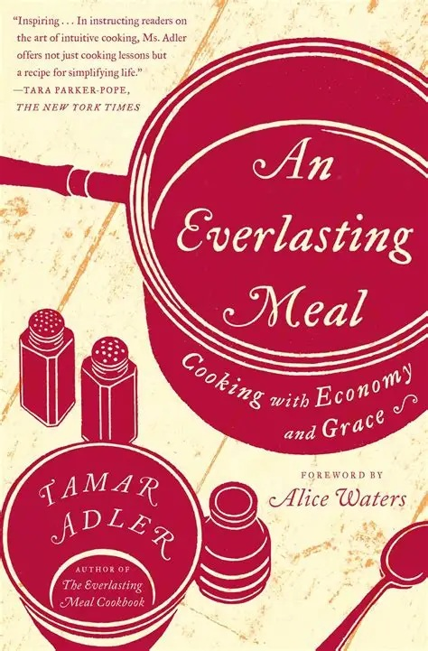

Tamar Adler – An Everlasting Meal
- ENG
- Kniha
Má nejoblíbenější kniha o vaření, která zcela ovlivnila způsob, jak o něm přemýšlím. Nejedná se o soubor receptů, ale o filozofickou úvahu o tom, jak vařit jednoduše, hospodárně (finančně i časově) a beze zbytků. Tamar Adler popisuje vaření jako nepřetržitý proces, který je součástí každodenního života, kdy neustále využíváme to, co nám zbylo od minule, spolu se surovinami, které máme zrovna k dispozici.
- Kniha: Amazon.com